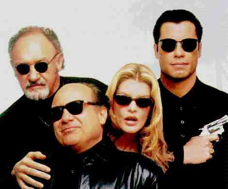

Get Shorty/A-,A Wow. What a trip. Get Shorty is so thoroughly engaging I feel like I won this trip to Hollywood, slightly askew, and got to witness the glitzy town in full blown overdress. It is a marvelous production that extracts its exuberant humor from the natural dialogue and habits of its players. Chilli Palmer is a movie-loving mobster looking to parlay other people’s bad bets into a movie production career. Chilli trails a dry cleaner who’s stiffed the mob from Florida to California and as a favor from a casino boss makes a side trip to the home of movie producer Harry Zimm.  Chilli may not collect Zimm’s bad Vegas debt, but before the night is out, the loan shark and schlock producer have formed a film alliance.Get Shorty is an adaptation of the Elmore Leonard novel. Leonard is no stranger to Hollywood with more than a dozen screen credits Under director Barry Sonnenfeld from a script by Scott Frank, Get Shorty milks maximum humor from the original Leonard source material. The screenplay is true to the spirit of Leonard and is clearly the best adaptation yet of this writer’s eccentric material. Former DP Sonnenfeld working with two cinematographers over the course of the movie produces a handsome and uniform look. Amidst that the wonderful humor there is a constant undercurrent of danger emphasized by some sudden, unexpected violence that reminds the viewer that Get Shorty along with its hilarity is actually looking at elements of the bizarre reality of Hollywood. It is the abundant moments of hilarity that drive Get Shorty deliriously on target in poking fun at Hollywood pretensions. Mega-star Martin Weir makes a meeting with Zimm and Palmer at a fashionable Hollywood lunch spot and carefully customizes an omelet that defines his own importance. In another scene Palmer confers with dangerous Zimm investor Bo Catlett in Zimm’s office as Catlett outlines to Chilli how easy it is to write a screenplay. Anyone can do it a confident Catlett boasts. Considering the general malaise of writing in Hollywood it appears that too many people believe just that. Not the case in Get Shory happily. Sonnenfeld gives his players the freedom to create terrific performances. John Travolta uses graceful movement and a generous smile to make Chilli Palmer one of those instantly lovable screen characters. This is really Travolta’s best effort yet. Everything about Harry Zimm is schlockmeister through Gene Hackman’s witty and easygoing performance. Sandwiched in between these two powerhouses Rene Russo presents perhaps the film’s only false step, in terms of casting and character both. She just doesn’t seem to belong with Zimm. The assortment of supporting Hollywood characters is beautifully realized by the supporting actors from Dennis Farina as Ray “Bones” Barboni to Danny DeVito as Martin Weir and the always splendid Delroy Lindo as Bo Catlett. On this special edition MGM presents the theatrical trailer, a delicious deleted scene that I am so glad to have seen and director Barry Sonnenfeld’s running commentary on a second audio track. Sonnenfeld’s delivery is casual, matter-of-fact and sometimes a trifle too folksy. Some of the director’s comments seem incomplete. He mentions that the first six weeks of the film were shot by one DP and the balance by a second cinematographer. We don’t find out why. Get Shorty looks smashing in widescreen 1.85:1. Sharp as can be with intense colors that add considerably to the pleasure of the witty plotting. |